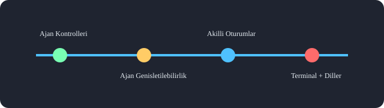

Modul 1
Ajan Kontrolleri ve Genisletme
Bu bolumde VS Code 1.110 ile gelen ajan ozelliklerini ogreneceksin: arka plan ajanlari, Claude ajan yenilikleri, debug paneli, auto approve ve plugin yapisi.
Modul 1
Bu bolumde VS Code 1.110 ile gelen ajan ozelliklerini ogreneceksin: arka plan ajanlari, Claude ajan yenilikleri, debug paneli, auto approve ve plugin yapisi.
Uzun gorevleri VS Code arka planinda calistiran ajanlardir. v1.110 ile birlikte;
/compact komutu ile baglam sikilastirmasi yapilabilir.v1.109'da tanitilan Claude ajan deneyimi v1.110 ile genisletildi:
/compact — istege bagli baglam sikilastirma./agents — ozel ajanlari listele ve yonet./hooks — Claude hookları yonet.getDiagnostics araci ile editor sorunlarina erisim.Sohbet oturumlarini ve ozellestirme yuklemesini derin gorunurlukle izleyen yeni panel.
Developer: Open Agent Debug Panel
Tum arac onay istemlerini atlayan global mod:
/autoApprove — global otomatik onayi ac./disableAutoApprove — global otomatik onayi kapat./yolo ve /disableYolo — ayni komutlarin takma adi.Beceri, komut, ajan, MCP sunucusu ve hook paketleri bir arada:
@agentPlugins ile ara ve yukle.copilot-plugins ve awesome-copilot.| Ayar | Aciklama |
|---|---|
chat.plugins.enabled | Eklentileri etkinlestir |
chat.plugins.marketplaces | Ek marketplace depolari |
chat.plugins.paths | Yerel eklenti dizinleri |
Ajan modunda yeni /create-* slash komutlari:
| Komut | Amac |
|---|---|
/create-prompt | Yeniden kullanilabilir istem dosyasi |
/create-skill | Cok adimli is akisi paketi |
/create-agent | Ozel ajan kisiligi |
/create-hook | Yasam dongusu hook yapilandirmasi |

Guncellenmis usages araci ve yeni rename araci — yuksek hassasiyetli navigasyon ve refactor icin LSP kullanir.
#rename kullan ve fib fonksiyonunu fibonacci olarak degistir
Ornek plugin kurulum komutunu kopyalayip VS Code terminalinde dene.
copilot plugin install ornek-plugin@awesome-copilot
/compact terminal ayarlari ve guvenlik kararlarima odaklan